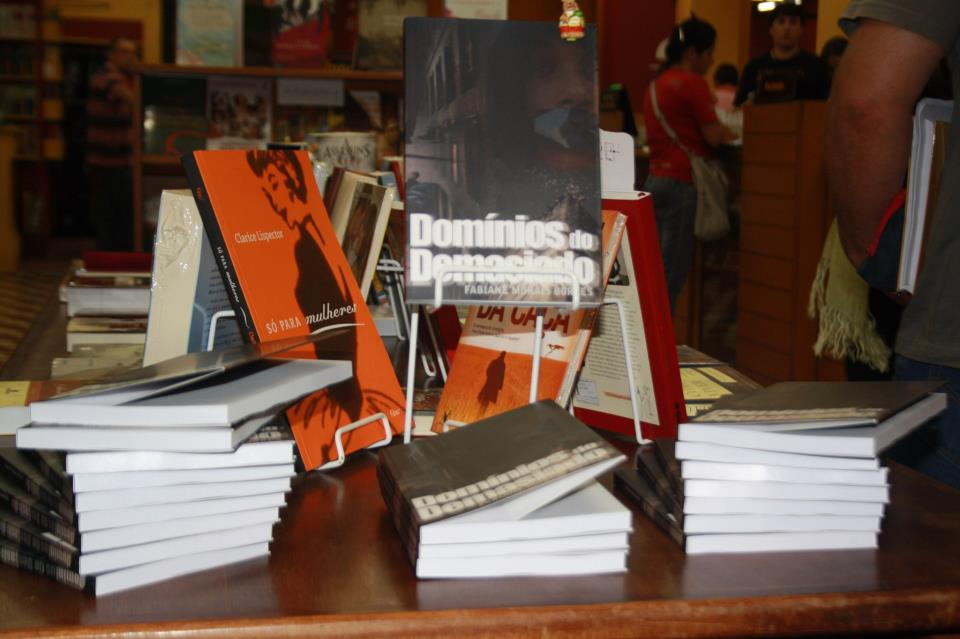
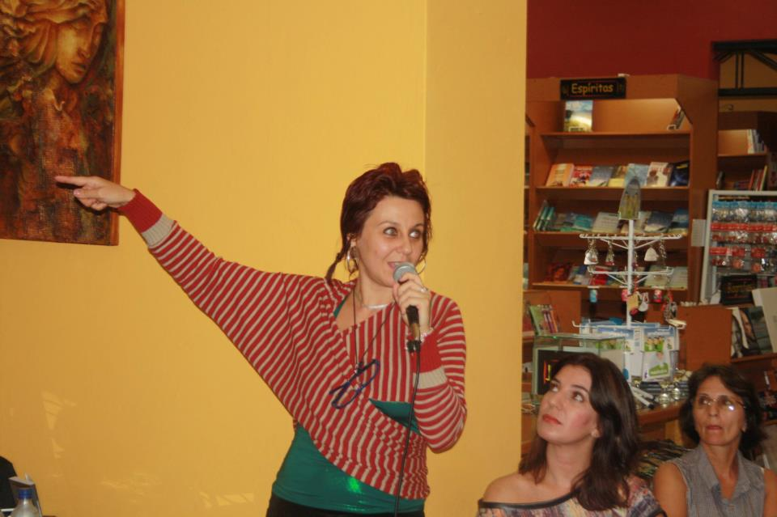

Fabi Borges lançará hoje, na Pinacoteca Porto Alegre (POA), seu novo livro "Domínios do Demasiado". Fabi já fez um lançamento na semana passada (5 de abril) em Bagé e compartilhou algumas imagens.


O livro, que está disponível para download no Estúdio Livre, é descrito pela própria Fabi como:
Um convite à imersão nos domínios do demasiado, onde sobrevivem os gestos invisibilizados de uma multidão que não cessa de manifestar-se.
O que aborda seu livro?
Fabi: Trata de experiências com moradores de rua, arte coletiva, intervenção urbana, arte política,
coletivos de arte, processos artísticos e mídicos junto aos movimentos sociais como: MSTC, MTST, MST. O livro fala sobre mudanças de perceptivas e práticas esquizoanalistas, na real são as coisas que vivi durante o período que fiquei em São Paulo. Os Domínios do Demasiado são os lugares onde acontecem todos esses encontros e experiências.
Como se deu o processo de confecção?
Fabi: Primeiro coloquei ele online, depois fiquei sonhando com um livro, talvez porque eu achasse que só na internet ele não seria tão acessível e sentia mesmo falta do objeto-fetiche LIVRO. Dai procurei editoras, foi muito difícil conseguir alguém que quizesse publicar. A Hucitec quis por conta da linguagem esquizoanalitica e também por intermedio do Lancetti, que coordenava a coleção saúde e loucura. É um livro sobre produção de subjetividade e novas práticas esquizoanaliticas, por isso interessou.
Como você tratou dos trâmites editoriais e licenciamento?
Fabi: Tive um problema sério com a editora, pois eles lançaram o livro primeiramente em copyright, isso me deixou muito brava, já que não condiz com as coisas que falo no próprio livro. Mas depois que fiz pressão eles modificaram. O resultado disso acho que é mais simbólico que concreto, é uma forma de fazer o símbolo da liberdade fazer sua própria intervenção. Difícil saber as consequências desse ato, eu queria viver dos meus livros, isso parece ser impossível. A editora não distribui o livro, só põe a venda na internet, todo o barulho em torno do livro sou eu mesmo que dou, e as pessoas que gostam dele. Comprar um livro quando ele já está disponível se torna então uma espécie de recompensa, algo como um colecionador de arte, ou os que amam o objeto. Cada livro custa R$ 8.50,00 para ser feito, a distribuição exige preços de transporte, a editora coloca o livro a preço de R$ 35,00 e cada livraria cobra 30% do preço do livro. Ou seja, no final o que o autor ganha é o preço do livro mais uns trocados - tem que ver o que vai sobrar para essa coisa de ser escritora. Às vezes acho que é demodê, old fashion, outras me afirmo e saio com meus livros como se fosse um cantor com seus vinis para vender. É um assunto importante, de ponta que deve ser mais discutido: como pode sobreviver quem gosta de escrever? A simples disponibilização na rede não garante nenhuma sobrevivência.
Quais são suas perspectivas como escritora?
Fabi: Eu gostaria de ficar viajando o resto da vida pelo mundo escrevendo livros, sendo paga pra isso, essas são minhas perspectivas. Não gostaria de ter um trabalho que me exigisse tanta presença e que me impedisse de escrever, e além disso que me obrigasse a escrever por avaliacão profissional - é o caso dos nossos professores universitários. Mas eu sei que essa vontade de viver para escrever é coisa do século XX, né? Tá saindo mais um livro na sequencia, o Breviário de Megalomania!
Serviço:
Pinacoteca Porto Alegre: Rua da República, 409. Porto Alegre.